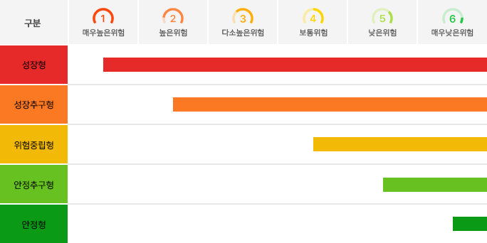

성장형
이미지에서 가장 높은 위험 구간에 해당하는 성향입니다. 큰 손실 가능성을 감수하더라도 높은 수익률을 기대하는 투자자에게 가깝습니다.
- 위험도: 매우 높은 위험
- 추천 ETF: TQQQ, QLD
- 활용 방법: 전체 자산 중 일부만 투자하고, 하락장에서는 무리한 추가 매수보다 분할 매수 기준을 정하는 것이 좋습니다.
아래 이미지는 투자 성향을 위험도에 따라 1단계부터 6단계까지 나눈 표입니다. 왼쪽에 가까울수록 높은 위험을 감수하는 성향이고, 오른쪽에 가까울수록 안정성을 중요하게 보는 성향입니다.

이미지에서 가장 높은 위험 구간에 해당하는 성향입니다. 큰 손실 가능성을 감수하더라도 높은 수익률을 기대하는 투자자에게 가깝습니다.
높은 수익을 원하지만 성장형보다는 위험을 조금 낮추고 싶은 성향입니다. 기술주 중심 ETF와 일부 레버리지 ETF를 함께 비교할 수 있습니다.
수익률과 안정성을 모두 고려하는 중간 성향입니다. 지나치게 공격적인 상품보다는 대표 지수 ETF와 성장형 ETF를 함께 볼 수 있습니다.
원금 손실을 크게 두려워하지는 않지만, 높은 변동성은 부담스러운 성향입니다. 배당형 ETF나 시장 대표 ETF가 잘 맞습니다.
이미지에서 가장 낮은 위험 구간에 가까운 성향입니다. 높은 수익률보다 안정적인 흐름과 손실 관리가 더 중요합니다.
정리: 성장형에 가까울수록 QLD, TQQQ처럼 변동성이 큰 ETF를 볼 수 있고, 안정형에 가까울수록 SPY, VOO, SCHD처럼 분산투자와 배당을 중시하는 ETF가 어울립니다.